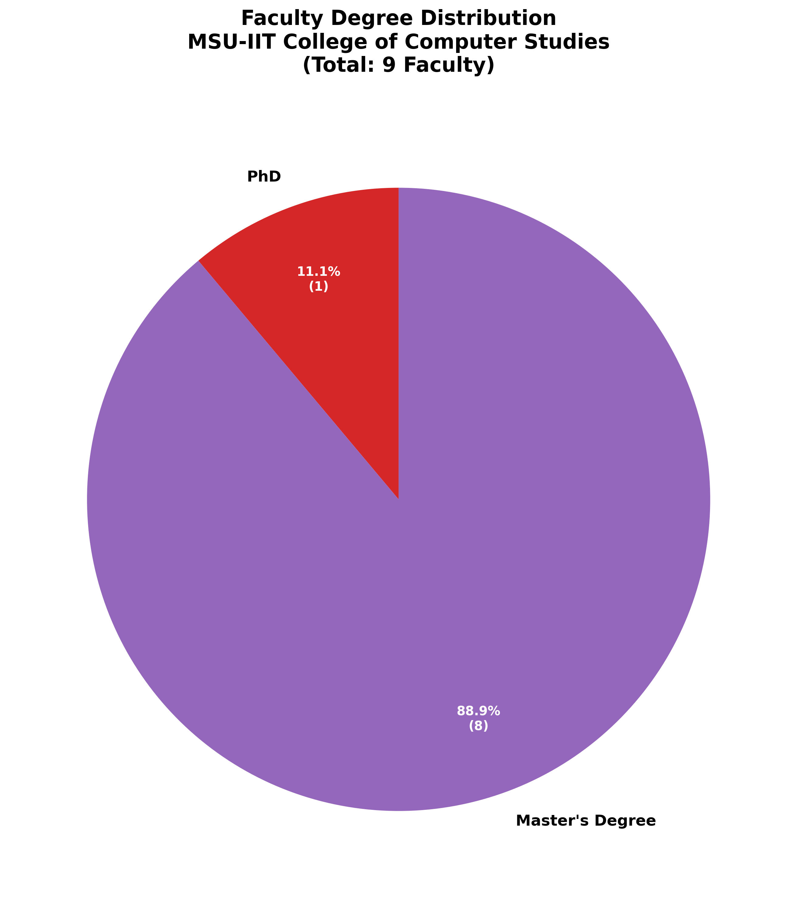

MSU-IIT recognizes faculty as its most valuable asset and is
committed to providing comprehensive, systematic, and continuous faculty
development opportunities that enhance teaching effectiveness, research
productivity, and service excellence. The institution’s faculty
development area is designed to support faculty at all career stages
while aligning with institutional strategic goals and national
educational priorities.
Primary
Objectives of Faculty Development Area
Advanced
Degree Attainment and Academic Excellence [UPDATE NEEDED: 2021-2025
Data]
To support faculty in pursuing doctoral and master’s degrees in
computer science and related fields, with 100% of faculty holding
master’s degrees, 1 faculty member holding a PhD, 2 faculty having
completed academic requirements for PhD, and 2 faculty currently
pursuing PhD studies as of 2025.
To ensure faculty academic qualifications meet CHED CMO No. 25
Series 2015 requirements for BS Computer Science programs
To maintain faculty rank distribution aligned with AACUP standards
with current distribution: 11.1% Professor (1 faculty), 22.2% Associate
Professor (2 faculty), 66.7% Assistant Professor (6 faculty)

Faculty Degree DistributionFaculty Rank Distribution
References: - PPP Pages 3-5: Faculty Profile Matrix
showing educational attainment and academic ranks - PPP Page 5: Charts
showing “Highest Degree Earned” and “Academic Rank” distribution - AACUP
Parameter A folder: Academic Qualifications documents - PPP Page 27:
Parameter E Faculty Development degree programs table